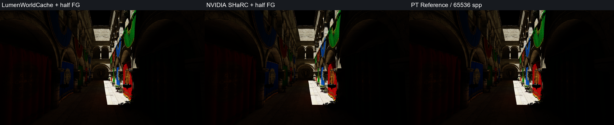
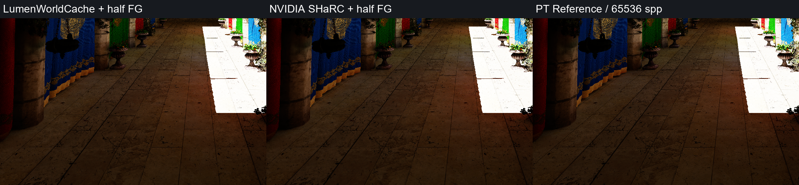
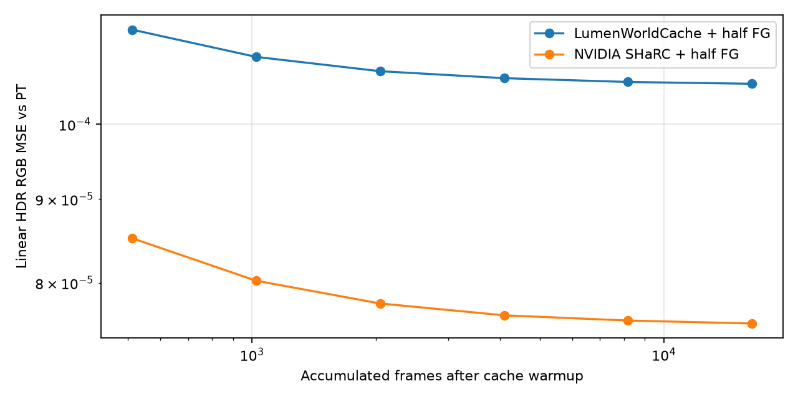
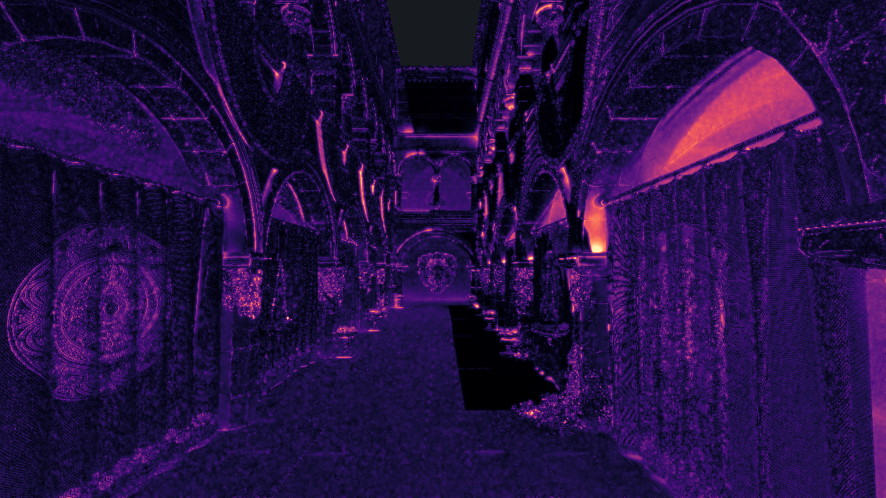
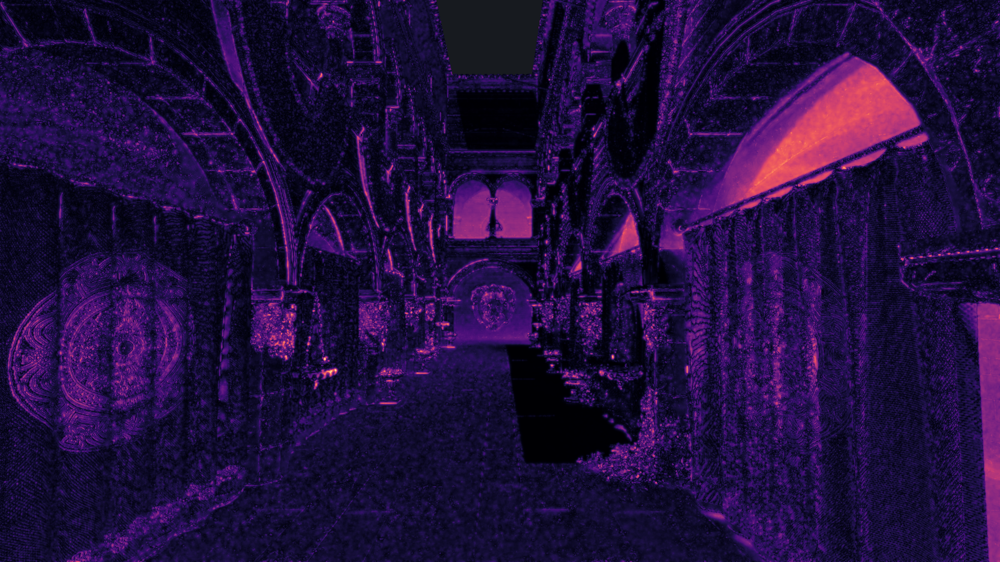

相机 (-9,1.6,0) 看向 (8,2.5,0)，方向光 (0.3,-1,0.2)、强度 RGB 50，点光关闭。已设为 SponzaLambert 默认灯光，原版 Sponza 不变。1920×1080，相同 Lambert 材质和法线修正。复用 11 月 20 日同灯光/相机的未降噪 PT 65536 spp；两组 GBuffer 法线与参考逐像素一致，两组位置缓冲也完全一致。
两组均为独立缓存＋960×540 FG＋相同深度/法线引导重建＋Accumulate（SingleCompensated）＋统一显示映射。NRD、ReSTIR、RTXDI 关闭，半分辨率采样位置固定。WorldCache 沿用原配置（8×8 GBuffer 起点、3 个更新顶点加末端 bootstrap）；SHaRC 恢复官方示例配置（5×5 下采样的相机射线，包含首个命中，最大 8 个顶点，无自定义末端 bootstrap）。两组缓存预热 8192 帧后清空屏幕累积。只对齐空间格子尺寸，不再强行对齐更新预算。
WorldCache：minCell=0.025、density=20；SHaRC：sceneScale=20、logarithmBase=2、levelBias=2。对应最小边长相同，1/2/4/8/16 米的格子边长分别为 0.05/0.1/0.2/0.4/0.8 米。对可见表面实测，格子边长相同的像素占比为 99.996436%。细微边界差异可能来自位置偏置参与距离计算的时机；不修改官方 SDK。
WorldCache 沿用容量 2²⁰、history=16、stale age=64；SHaRC 使用官方示例容量 2²²、history=20、stale age=60，并启用材质去调制和原生 64 位哈希原子操作。WorldCache 核心缓存约 56 MiB；SHaRC 核心缓存约 160 MiB。两边的哈希冲突处理、法线分桶、历史融合和多跳更新算法保留原实现：WorldCache 用主轴六面法线分桶，SHaRC 默认用法线符号八象限。因此这不是所有缓存行为完全一致的实验。
| 方案 | 累积帧数 | MSE ↓ | HDR-FLIP ↓ | 完整图 GPU ms ↓ | 末次翻倍相对 RGB RMS |
|---|---|---|---|---|---|
| LumenWorldCache + half FG | 16384 | 0.00010586503 | 0.14170 | 1.929 | 0.075% |
| NVIDIA SHaRC + half FG | 16384 | 7.555361e-05 | 0.12909 | 2.156 | 0.079% |
稳定检查：累积翻倍后相对 RGB RMS <0.1%，显示平均变化 <0.25/255，P99 <2/255；至少 16384 帧。GPU 为稳定期 512 帧均值，包含 GBuffer、缓存更新、Resolve、FG、重建、Accumulate 和显示，详细分项见 JSON。MSE 在可见表面 mask 内计算线性 HDR RGB；HDR-FLIP 共同曝光范围、ACES、PPD 67，不是百分比误差。

WorldCache 1080p · SHaRC 1080p · PT 1080p
本报告替代上一版额外对齐预算的实验。本次 SHaRC 只调整 sceneScale/levelBias 来匹配格子大小，其余缓存和路径设置采用官方 RTXGI Pathtracer 04372d7f 的默认配置。SDK 文件与下载版本逐文件校验一致。
SHaRC 对 PT 的 MSE 为 0.0000755536、HDR-FLIP 为 0.129087；WorldCache 分别为 0.000105865、0.141698。完整图 GPU 耗时分别为 2.156 ms 和 1.929 ms。设备 RTX 5070、驱动 621.01，统计 512 帧。两组都预热 8192 帧，再累积 16384 帧并通过稳定检查。
柱脚局部图中两边都保留接触暗化，SHaRC 的阴影地面整体比 WorldCache 更接近 PT；仍存在局部亮度和色调差异。该结果仅适用于此静态视角，不能外推到镜头运动和非 Lambert 材质。
恢复默认后，SHaRC 的缓存容量和更新预算高于 WorldCache，因而这是“官方默认 SHaRC 与当前 WorldCache、仅格子尺寸对齐”的比较，不是等预算算法比较。Falcor 的材质/光源桥接、随机数和共同的半分辨率 FG 输出仍有引擎接口差异，不应称为整个官方示例逐位一致。
已验证 Release 构建、SHaRC 与 WorldCache 切换、原生 64 位哈希原子操作运行、默认方向光、缓存有效命中和非有限值检查。旧版“3 顶点＋末端 bootstrap”、关闭材质去调制、锁缓冲和预算/历史强行对齐均已撤回。官方 Anti Firefly 字段在参考提交中未进入 SHaRC 着色器计算，没有额外添加自己的滤波。


统一 Magma [0,1]，暗为误差小，亮为误差大，mask 外为深灰。
WorldCache

SHaRC

官方示例基准固定为 NVIDIA RTXGI 04372d7f。对照 UI.h、Pathtracer.cpp、Shaders/Pathtracer.hlsl 和 SharcResolve.hlsl。SDK 版本与该示例引用的子模块完全一致。Anti Firefly UI 字段在此提交中没有实际进入 SHaRC 着色器计算，因此没有自行添加过滤器。
SHaRC 使用 NVIDIA 官方 1.8.3（4e21b585），CMake 自动下载固定版本，SDK 未修改。执行顺序：GBuffer → SHaRC Update → UAV barrier → 官方 Resolve → UAV barrier → FG Query → Reconstruct → Accumulate → Display。SDK 的缓存重采样和相邻层历史融合启用；材质去调制开启，方向 SH 编码、responsive lighting 保持官方默认关闭，面向本次 Lambert 对比。
SHaRC 查询只发生在间接命中点，命中返回总出射辐亮度，不重复添加直接光。使用官方射线段长度大于格子对角线及 roughness footprint 判断，不满足或缓存缺失时继续追踪；最大 8 个路径顶点（包括已经由 GBuffer/FG 处理的相机首个命中），保留官方俄罗斯轮盘和 throughput<0.01 终止阈值；WorldCache 仍沿用原来的单次查询，缺失返回零。回退成本计入耗时，画质差异可能同时受缓存与回退策略影响。两边材质、解析光 NEE、环境 miss 与 alpha test 共用 Falcor 桥接。SHaRC 的随机数发生器、材质/光源接口及半分辨率 FG 输出仍使用 Falcor，不是整个官方渲染器逐位复刻；本轮只含一个方向光和 Lambert 材质。动态图、复杂镜面/透射材质和 Vulkan 本轮未验证。